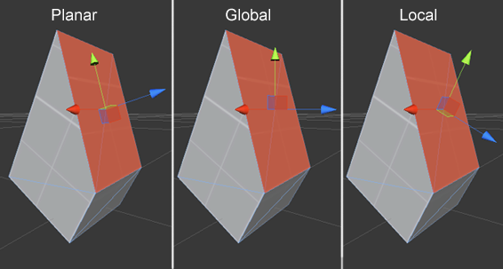

"ProBuilder" & "Prototype" Documentation
9-16-2014; ProBuilder v2.3.0f13 (r2856)
Helpful Links:
Optional Registration:
If you would like to receive updates and info directly via email, please “Register” your purchase by sending the invoice # to contact@procore3d.com. Thank you!
Thanks for purchasing ProBuilder, your support allows us to keep updating and developing all the ProCore tools!
Website: The central hub for all ProCore tools, assets, and info.
Contact ProCore:
- Email: contact@procore3d.com
- Facebook: www.facebook.com/probuilder3d
- Twitter: www.twitter.com/probuilder3d
Newsletter: Subscribe to receive info on ProCore tools via email, usually about once or twice a month. No spam here!
Video Tutorials: Please, take a short break to watch the video tutorials before using ProBuilder or Prototype. Make a sandwich, relax and watch the tutorials- you’ll be an expert in no time!
ProCore Forum: Ever-expanding and resource-rich, with a very helpful and active community. Whatever you need, look for it here, and start a new thread if you can’t find it! Especially if you have an error, bug, or issue that needs fixing, it’s best to post directly to the forums.
Beta Testing Group: Available to all registered ProBuilder users! You will receive a link upon registering, and can then request to join.
Video Overview: http://www.youtube.com/watch?v=Nomx1LNk7r8
ProBuilder is an editor extension for the Unity 3D game engine, one that brings some very exciting and powerful new features to the engine. With ProBuilder, you can finally build, edit, and texture custom geometry with an extremely fluid, intuitive, and fast workflow. You can even manipulate UV direction, tiling, offset, rotation, and more.
Using ProBuilder, you can also quickly setup very efficient collision and occlusion, and trigger volumes for events, switches, and zones.
Prototype is the core of ProBuilder, stripped for speed and simplicity. Using Prototype, you can quickly build great looking early-stage structures, props, walls, bunkers, vehicles, virtually anything at all. Test and tweak instantly, then replace with final models once your artists catch up- if they can! Prototype also includes ProBuilder’s ability to quickly colorize faces without adding a single draw call, so you can designate team areas, or just get creative with colorful dev textures.
IMPORTANT: This documentation encompasses ALL features, actions, and tools available in ProBuilder- only some are included with Prototype. If you are using/considering Prototype, please view the full ProBuilder vs Prototype Comparision.
Whatever your project, Prototype or ProBuilder can accelerate its development, ease your stress, and ultimately allow you to ship a better finished project. Give it a try, you’ll wonder how you ever worked without it!
Video Tutorial: http://www.youtube.com/watch?v=TXV0Jn7Vs9Q
WARNING: The upgrade process is NOT reversible, and if an error occurs, you will almost certainly lose all your work. Make a backup of your entire project!
Step 1: Import the Unity Package
If you’re installing into a new project, The Install Window should appear automatically. If it does not, navigate to “Tools > [name of package] > Upgrade / Install”.
If this is an upgrade- congrats, all done! Otherwise, a window will appear with several options, and a bright green “Install” button.
Step 2: Select Install Type
Release is the standard installation type - it provides the core and Editor utilities as libraries, meaning they do not need to be recompiled along with your existing project.
Alternatively, you may choose to install the source version (ProBuilder only), providing complete access to all scripts, etc. If you choose to install source, please note that you will need to remove any previous ProBuilder installs prior to running the installation process.
When ready, click “Install” - ProBuilder will unpack and install the chosen version.
NOTE: If you are upgrading an existing ProBuilder project, the install process should automatically begin with no interaction necessary. If the install window opens, this typically means that the install script cannot locate the old ProBuilder installation. Please make sure that the older ProBuilder folder is located at the path "Assets/6by7/ProBuilder".
Video Tutorial: http://www.youtube.com/watch?v=Tylp-UzEm84
With ProBuilder, you can build, edit, unwrap, and texture geometry, right inside the Unity editor, similar to 3D modeling in tools like 3DS Max, Maya, or Blender. Obviously, that's a lot of potential complication, but we won't let that happen! To keep your Unity workflow smooth and complication-free, ProBuilder uses simple, quick-to-swap, Edit Modes.
New in ProBuilder v2.3, there are only 2 Edit Modes, Object and Element:
While using ProBuilder, you will always be in one of these two Edit Modes (Object or Element). The currently active mode is displayed by the "Mode Indicator" at the top of the Unity SceneView. This "Mode Indicator" can be clicked to swap between modes, or (much better!) you can use keyboard shortcuts.
Editing Geometry, or "3D Modeling", is simple and exactly as you would expect: enter Element mode, then proceed to edit by Vertex, Edge, or Face, using standard Unity controls (ie, Move, Rotate, and Scale). Nothing new to learn! Then, use the GUI Panel to perform more complex actions like Flipping, Bridging, Connecting, Welding, etc. See the Interface and Geometry section for full details!
Fun Tip: Select a Face, then try holding "SHIFT" while Moving, Rotating, or even Scaling- hooray, instant extrusion!
Applying Materials and UV Editing, or "Texturing", has been completely rewritten for ProBuilder v2.3. You now have both Auto-UV and Manual UV unwrapping options for both fast and fine-grained control. Simply open the "UV Editor Window", then enter Element mode and edit the UVs by vertex, edge or face. Changes are reflected immediately in the Unity SceneView- zero guesswork. Similar to Geometry Editing, the UV Actions Panel provides access to complex actions like Sew, Collapse, Project Faces, and so forth. See the "Interface Overview" and "Texturing" sections for full details on the completely new, and much improved, Texturing/Material system.
But WAIT there's more!: ProBuilder offers many other tools and features, designed to aid in level design, prototyping, and final art/production. Items like:
Video Tutorial: http://www.youtube.com/watch?v=U7HEG0iKlzU
Making ProBuilder both powerful AND incredibly user-friendly is Priority #1 for us. ProBuilder v2.3 takes this to a whole new level! We are seriously excited to show off this new GUI + interface, so please, please send us any comments, questions, or feedback!
In order to create or edit with ProBuilder, you will need the GUI Panel open. This is done by selecting from the top menu bar in Unity:
Tools > ProBuilder > Open Probuilder Window
This will open the GUI Panel, which you can leave floating, or dock. We recommend docking in a vertical position with minimal horizontal size, to use the least amount of space.
New for ProBuilder v2.3, the GUI Panel is dynamic- it will change based on what you have selected, and the current Edit Mode, similar to Unity's Inspector Panel. This allows ProBuilder to display all currently relevant actions in a single, clean panel.
Further, all action buttons are now text-based, instead of icons. It doesn't look quite as pretty, but you'll never have to wonder "what does that icon mean again?".
Panel Area (1) - Element Modes (Vertex, Edge, Face)
At the very top of the GUI Panel, and always available, are the 3 Element mode buttons: Vertex, Edge, and Face.
Click the Element you would like to edit, and ProBuilder will instantly move into that Element mode, allowing you to edit the object.
ProTip: You can also hit
"G"on your keyboard to toggle in/out of Element mode, and"H"to swap between Vertex, Edge, and Face. Hitting"Escape"will always exit to Object mode.
Once in an Element mode, you can click again on it's button to exit Element mode, and return to Unity-standard Object mode.
Example: Select an object, then click on the Vertex button- the object will now show it's vertices, which you can edit. Then, click on the Edge button, to show and edit by edge. Finished editing? Click again on the Edge button, since you are still in that mode, to toggle out of editing and back to Object mode.
Panel Area (2) - Tools
The Tools section is also always available in the main GUI Panel. These buttons will open separate, floating panels with the following uses:
Panel Area (3) - Geometry Actions
The 3rd section of the main GUI Panel is the truly dynamic area- here you can always see all available Geometry Actions, based on your current Edit Mode and selection. See the Creating and Editing Geometry section for details.
Panel Area (4) - Entity Actions
The bottom area of the main GUI Panel is reserved for Entity Actions. These are used to convert ProBuilder Objects into special Entity Types, and toggle on/off the visibility of each. Don't underestimate how useful these can be! See the "Entity Types" section for details.
...being a more detailed and informative treatise on the finer points of 3D modeling and editing within ProBuilder
Video Tutorial: http://www.youtube.com/watch?v=c8GbEfi51Cc
New to 3D Modeling? This documentation can't be a full guide to 3D modeling in general, so we highly recommend searching online for good "Introduction to 3D Modeling" courses- any will do for learning the basic techniques, guidelines, best practices, etc.
ProBuilder is similar to most major 3D modeling tools, in that you start with basic geometric shape, then build upon that geometry to create your own, personal, Works of Wonder (certainly, nothing less!).
Creating Your First ProBuilder Object
The simplest and most often used shape, is a 1x1x1 meter cube. You can instantly spawn this cube into your Scene by pressing "Ctrl-K".
Creating Complex ProBuilder Objects
ProBuilder also offers a (growing!) variety of more advanced shapes to choose from, all with unique generation options. Give them all a try, as they can save you a lot of time and trouble! You customize and spawn these shapes through the Shape Panel.
ProTip: You can create new ProBuilder Objects in both Object and Element modes! There is no need to switch between modes when creating new, or duplicating existing, ProBuilder Objects.
This panel can be opened at any time from the main ProBuilder GUI Panel ("Shape" button in the Tools section), or by pressing "Ctrl-Shift-K" on the keyboard.
Upon opening the Shape Panel, you will see the Shape Preview, a blue-textured ProBuilder Object, appear in the Scene. You can move, rotate, and scale the Shape Preview just like any other object, before committing it. However, it is only a preview, and will disappear when the Shape Panel is closed.
Shape Panel GUI
Available Shapes and Options
As mentioned in the Fundamentals and Interface Overview sections, ProBuilder uses a "Mode" system to keep your Unity workflow clean and speedy. Let's go over those modes again, it a bit more detail.
Object and Element are the two "major" modes. These are designed so you can quickly swap between each, and seamlessly work on both ProBuilder and non-ProBuilder parts of your game.
Object mode is essentially standard Unity workflow, where ProBuilder Objects act like normal static meshes. There are some special actions available though, which we will look at later.
How to Use: Click on the "Object" button in the Mode Indicator to exit to Object mode. Or, hit "Escape" on the keyboard.
Element mode is the real power of ProBuilder- in this mode, you can see and edit the Vertices, Edges, and Faces of ProBuilder Objects, similar to 3D Modeling in tools like 3DS Max, Maya, Blender, etc.
How to Use: Click on any of the Element Mode buttons at the top of the GUI to instantly enter that Element Mode (Vertex, Edge, or Face). Or, hit "G" on the keyboard. Once in an Element Mode, you can also hit "H" on the keyboard to swap between Element Modes.
Nothing showing up? Vertex and Edge visuals will only show on the ProBuilder Object(s) currently selected, otherwise the screen would get WAY too busy!
Selecting and Manipulating Elements
Note: An "Element" refers to a Vertex, Edge, or Face. 3DS Max users, think "Sub-Object" ;)
Selecting and manipulating Elements in ProBuilder works just like anything else in Unity- nothing new to learn here! You can:
ProBuilder also add two special selection methods for Elements:
Geometry Actions
In the following paragraphs, we will cover each of the Geometry Actions available in ProBuilder, moving top-to-bottom on main GUI Panel.
The following actions are available in all Modes:
The following actions are only available in Object mode:
The following actions are only available in Element mode, but can be used with all Elements:
Handle Coordinates: This drop-down list controls the coordinate space currently being used for editing geometry.

Not making sense? This can be a confusing subject the first time you encounter it. Stick with “Global”, and give each of the others a try from time to time- they will make better sense with practice, than I could ever explain. You will soon find these are incredibly handy for complex construction. Hit the “P” key on your keyboard to swap between Coordinate Space modes.
ProTip: It is often much easier to simply hold
"Shift"while using the Move, Rotate, or Scale tool- this will automaticaly extrude the selected Face(s)!
"Backspace" keyProTip: Don't accidentally press
"Delete", that will delete the entire object!
The following actions are only available in the Vertex Element Mode:
Here, we’ll go over some basic tips, tricks, and advice for modeling with ProBuilder 2.0:
Use ProGrids! If you are not using ProGrids yet, please do! With ProBuilder, you will most often be constructing hard-surface models, with many parts that need to align exactly, match sizes, and so forth. ProGrids will save you hours of time and sanity, and your resulting creation will look and function better as well.
Stay “On The Grid”. Now that you are using ProGrids, stay on that grid! Making sure all your vertices are on an exact grid point will make your ProBuilder objects much, much simpler to align, edit, and modify.
Start Big. The first version you build won’t always be wrong, but it won’t ever be right, either. So, start with with large, simple, boxy construction- I typically start at a grid level of 1/2 meter (.5) If you are building a level or world, test out the flow, fit, and scale. Try some lighting and atmosphere tests, really get a feel for what you are constructing. Then whittle down to smaller and smaller grid levels, adding more detail with each level, just like LODs.
Use Simple Angles. When creating angles, try to stick with exactly 1x1, 1x2, and 1x3, etc. For example, “1 unit up, 1 unit over”. This will keep your design clean, and help match up complex geometry.
Textures Come Last. Greybox that level completely, before you even think about adding real textures! Use the Colorizing tool to differentiate your level/world/item as needed, but save the real texturing for the very last. Only once the geometry is 95% finished and final, you should begin adding real textures, else you risk wasting many hours of work when that geometry suddenly needs to be changed...
Delete Unseen Faces. Fewer triangles to render, and your lightmaps will take MUCH less time to bake!
Assign “World” Geometry. Only ProBuilder objects that are given the “World” entity type will occlude other objects. This isn’t the default type, so you have to assign it manually. See the "Entity Types" section for more details.
You can apply materials to your ProBuilder Objects using simple "drag-n-drop", by using the (new for v2.3) Material Palette, or via the QuickPaint method. Try them each, and find which works best for you!
For this method, simply drag a material onto any ProBuilder Object, just like a normal Unity Object. However, the result will differ by Edit Mode:
The Material Palette, new in v2.3, allows you to setup an easy-access palette of often used materials, and apply them instantly via a GUI button, or keyboard shortcuts (Alt + 0-9). You can also add and delete custom material slots should you need more than 10. Similar to using "drag-n-drop", applying a material via the Material Palette will have different results depending on Edit Mode:
"QuickPaint" is a method used via the GUI at the very top of the Material Palette window. Choose a material for the QuickPaint feature, then just use CTRL-SHIFT-LeftClick to instantly paint that material to any face you click on.
Video Tutorial: http://www.youtube.com/watch?v=U_5f8RlciWQ
ProBuilder 2.3 nearly entirely overhauls the previous UV system. Don't worry, UVs can still be automatically generated (and are by default). The familiar controls and handles are all still here.
The most obvious change is that UVs are now edited in a fancy new window, which shows you exactly where your UVs are in 2D space. You can position, rotate, and scale your UVs in this window, or you can lock the Texture Handle and manipulate UVs in the SceneView.
The next biggest change is the addition of a new Manual Mode for UVs. Faces are by default unwrapped using Auto Mode, which means that you control a set of parameters that are used to project UV coordinates for you. If you've used ProBuilder prior to 2.3, this will feel very familiar. Manual Mode on the other hand behaves more like traditional 3D modeling apps - you have precise control over how UVs are projected, and once you've set them they will not move.
Faces that are in Manual Mode will be highlighted in Orange, while Auto Mode UVs will be highlighted Blue.
Auto ModeUVs are only applicable to face selections - if you wish to modify UVs per-edge or per-vertex,Manual Modemust be used. ProBuilder will automatically handle switching fromAutotoManualmode for you if you modify a non-face element while editing anAutoface.You may switch between
ManualandAutoat any time, but be aware that when swapping fromManualtoAutoyou may lose some features of your work (sinceAutomode cannot manipulate vertices independent of their faces).
The UV Editor window contains two guide lines, on the X and Y axis ranging from 0,0 to 1,1. These lines serve to provide a point of origin.
| Name | Description | |
| 0 | Tool selection | Sets the current tool - {Pan, Move, Rotate, Scale} |
| 1 | Element mode | Changes the element selection mode - {Vertex, Edge, Face} |
| 2 | Texture Lock | Sets the SceneView tools to be used for UV modifications. This takes the place of Texture Mode. |
| 3 | Show Material Preview | When toggled, a preview of the first selected face's material texture will be shown. Note that this features requires the material's shader to contain a _mainTexture property. |
| 4 | Actions Window | This window will update based on your selection. It displays the relevant tools and actions for each mode per-selected face. |
| 5 | Canvas | The blue guides represent coordinates (0,0) -> (1,1). Your UVs may be placed anywhere on this canvas. |
There are two interfaces that can be displayed in the Action Window: Manual Mode and Auto Mode. Both modes provide similar functionality, with important differences in how they are executed.
Note that if you modify a single vertex, edge, or any non-face element while in
Auto Mode, the face containing those elements will automatically be converted toManualfor you.
| Description | |
| 0 | Convert the current face selection to `Manual Mode` UVs. This will clear all current `Auto Mode` settings for this face, but you will not lose UV positions. |
| 1 | Fill Mode determines how UVs behave once they're projected. Tile is usually the correct behavior, but in some cases you may wish to fit your UVs into (0,0)-(1,1) space. Fit uniformly scales UVs to size, where Stretch simply expands the selection on all sides to fill space. |
| 2 | Offset, Rotation, and Scale are applied after UVs are projected. You may use the UV Handle tool or these fields to set values. |
| 3 | Special toggles enable very specific changes to how UVs are calculated. Specifically, they allow you to flip coordinates on the X` andY axis (using Flip {U, V}) or invert them (Swap U/V). |
| 4 | World Space tells ProBuilder to skip the normalization step following a projection event - UVs will be left where-ever the initial projection places them. |
| 5 | Texture Groups provide high level access to the projection process. Setting faces to share a texture group will guarantee that those faces will be projected as a single plane, sharing the same parameters. This is most often useful for faces that have a similar orientation, and share an edge. |

| Description | |
| 0 | Convert the current face selection to Auto Mode UVs. |
| 1 | Project UVs provides methods of projecting vertices to UV space. This is the first step in unwrapping a model. See below for an explanation of both. |
| 2 | Fill Mode provides actions for setting UVs to certain spaces. Currently Fit UVs is the only option, which automatically (and uniformly) scales all selected UVs to fit in (0,0)-(1,1) coordinate space. |
| 3 | Selection provides actions for expanding the current element selection. A UV Island is any set of faces or elements connected by the Sew or AutoStitch functions. |
| 4 | Edit allows you to connect / disconnect UV elements. Sew is similar to a geometry Weld. |
| 5 | Flip {Horizontal, Vertical} flips UVs across the X or Y axis. |
Planar - This projects UVs by treating all faces as a single plane, then mapping their vertices to 2d space.Box - Project UVs from the best matching normal on a surrounding box. This is great for quickly unwrapping an object with generally acceptable defaults.Autostitch is an action that will perfectly align 2 faces at their shared edge. To perform an Autostitch, simply select a face (one face only), then Control+Click a neighboring face.
On success, the SceneView will display a notification and the current selection will be set to the clicked face. You may continue Control + Clicking-ing neighboring faces.
The UV Editor window must be open to perform an
Autostitchaction.To successfully
Autostitchtwo faces, they must share anEdge.
When using the UV Editor's Handles, it may be useful to set a different pivot point than the center of the selection. To do this, simply Right Click and drag the Move Handle to the desired pivot. Once you have placed the pivot, you may switch freely between Move, Rotate, and Scale tools without losing your pivot.
Mac Users - Use
Alt + Draginstead ofRight Click + Dragto set custom pivot points.
To reset your handle pivot back to the center of a selection simply click a new element (or the current selection).
When dragging UVs, you may notice that your selection snaps to the nearest vertex. This makes aligning faces very quick, but can be undesirable in some situations. To disable proximity snapping, simply hold the Shift key while dragging.
Video Tutorial: http://www.youtube.com/watch?v=m085rEQmVP8
"Colorizing" allows you to color individual faces when using a material that supports Vertex Colors. With this method, you can quickly add color and variation throughout your map, without changing materials or adding drawcalls.
The Vertex Color Panel
You can open the Vertex Color Panel from the main GUI panel with the button, or choose “Tools > [name of package] > Vertex Colors > Vertex Color Interface” from the top menu.
Customizing Vertex Colors
Applying Vertex Colors
ProTip: Keep one of the colors at simple white, so you can quickly revert faces to standard vertex color.
All ProBuilder objects have an "Entity Type". These are basically categories, like “Melee, Ranged, Explosive, etc”- they set certain properties in the object, and how it acts in your game.
Since all ProBuilder objects have a type, and you generally don’t need to see all types at once, you can use the Entity Types buttons to toggle the visibility on or off for each “group” of types. This becomes extremely useful as your scenes become more and more detailed/complex.
Mover is the same as a Detail object, except it is non-static, for use as moving platforms, doors, elevators, etc. It can be occluded, but will not occlude other objects. This is set as default, since too many occluders will actually hurt performance much more than too few. Set any ProBuilder object(s) to “Mover” type by selecting them, and hitting the “M” key on your keyboard.
Detail is the standard, default ProBuilder Object type. A mesh with a texture and a collider, nothing more. It can be occluded, but will not occlude other objects. This is set as default, since too many occluders will actually hurt performance much more than too few. Set any ProBuilder object(s) to “Detail” type by selecting them, and hitting the “D” key on your keyboard.
World type objects (ProBuilder only) are same as Detail, except they do occlude other objects. If you have large, simple objects, ones that you know will block larger portions of your level from view, they should probably be set as “World” type. Set any ProBuilder object(s) to “World” type by selecting them, and hitting the “O” key on your keyboard.
Collision objects are invisible in-game, but still have full collision. These are very handy for smoothing stairways into ramps, adding player clip to round out sharp corners, force fields, and many other semi-advanced uses. They will show in the editor as bright-green and semi transparent. Naturally, they do not occlude or block light. However, you should always disable them via the Entity Types controls before lightmapping, or their color will affect nearby areas. Set any ProBuilder object(s) to “Collision” type by selecting them, and hitting the “C” key on your keyboard.
Triggers are a special type of ProBuilder object, designed specifically to aid in the creation of Zones, Volumes, and (of course) Triggers. They are invisible in game, but have a collision component set to “trigger”. This makes them great for things like triggering elevators, doors, or cutscenes (as the player enters or exits the Trigger zone), designating “Kill Zones” or FX Volumes, and so forth. Set any ProBuilder object(s) to “Trigger” type by selecting them, and hitting the “T” key on your keyboard.
Deleting Faces is generally done once your mesh is complete, or near complete. Any face that will never be seen or "used" in the game should be deleted. Otherwise, it would add to the total polygon count, take up lightmap texture space, and potentially add drawcalls.
Occlusion is extremely important for good optimization. Wherever you have large, visibility-blocking ProBuilder objects, assign them the “World” Entity Type. This will let them take advantage of Unity’s Occlusion system, by becoming Occluders.
Note: Occlusion’s benefits are very much situational. Too much Occlusion can be worse than too little- the game needs to calculate what can and can’t be seen, and if you have a very complex Occlusion setup, it can easily crush your framerate. On the other hand, if you have a room with lots of high-poly objects inside, even a complex Occluder might be worthwhile. Further, if you use purely static Occlusion data, then you can use quite a few more Occluders without hurting performance, and vice versa if using a more dynamic Occlusion method.
Occlusion can be tricky at first, but will yield serious performance benefits, so don’t overlook it. Experiment with this one, and read up on Unity’s Occlusion system for the best results.
Merging allows you to collapse multiple ProBuilder objects into one single object, while still being able to edit it like any other ProBuilder object. This is mainly useful for reducing draw calls, and welding vertices. See “Merging” in the “Interface Overview” section for details on using this function.
Custom Collision should be used wherever possible, as it can significantly reduce in-game overhead and pre-game loading times. Essentially, anywhere that you can reduce a complex collider, or a group of colliders, down to a single, simple collider, you should use Custom Collision.
Lightmap Size is a special fix that involves using a separate script, so we left it for last. Essentially, all the visual optimizations in ProBuilder are geared toward reducing draw calls- this is mostly done by getting objects to “batch” in the renderer. In an ideal game, every single mesh that uses the same material will batch down to one single draw call. You could have thousands of items, and only one draw call- as long as they all batch properly.
Unfortunately, there are lots of things that break batching- scaling, as mentioned is one of those. Another, trickier one, is lightmap index.
Lets say you have 10 objects, you lightmap your scene, and end up with 2 lightmaps at 1024x1024 each. All objects should batch down to one, but you get 2 draw calls- why? Because you have more than one lightmap, and therefore, technically more than one material. This can get really ugly in a real-world situation, where you have multiple materials, and once you lightmap, your objects are spread throughout the lightmaps, allowing only a few or none to actually batch.
So, the solution is bigger lightmaps. And you can control that via this very handy script: http://forum.unity3d.com/threads/56435-light-map-max-at-1k-solved
All credit for this “Optimization”, and many thanks, goes to the forum users in the above linked post. We hope to implement our own version of this laterI, but for now just use the above script to set your lightmap size to larger than 1k (1024).
Each time after building your maps at larger than 1K size, you will also need to reset the lightmap texture’s import settings to “Max: 4K”, as well.
ProBuilder automatically generates perfectly sized, normalized, UV2 channels for each and every ProBuilder Object. Hurray! However, there are a few items to keep in mind when lightmapping:
Lightmap Size: As mentioned above, make sure you use the largest lightmap size possible. For mobile devices and web/flash, I wouldn’t go over 2K (2048x2048), but otherwise 4096 should be perfectly fine, if you need it.
Delete Invisible Faces: Without this, your lightmaps will be about 2-3 times the size they should be- very bad for baking time and game performance.
Lightmap Generation Settings
You can customize how ProBuilder generates lightmap UVs, both per-object and globally. To do so, choose Tools > ProBuilder > Editor > Lightmap Settings Window from the Unity menu bar.
Default values are preset for all objects, and should generally be appropriate. However, if you are seeing artifacts or strange effects on your lightmaps for an object, you may try adjusting these parameters.
Smoothing groups average the vertex normals with neighboring planes. This allows lighting to behave in a more realistic manner when dealing with edges that are intended to be smooth.

Opening the Smoothing Menu To open the smoothing menu, first open the Texture Window, either by pressing the ‘J’ key, or navigating to “Tools > [name of package] >Texture Window”. In the texture window, click the button titled “Smoothing.”
Using Smoothing Groups ProBuilder decides which edges should be smoothed by checking for neighboring faces that are in the same group. It also checks for ‘Hard’ groups, which as you might guess, hardens edges of neighboring faces.
As an example, selecting all side faces on a cylinder and setting them to the same smoothing group will result in smooth sides, while keeping the top and bottom edges hard. In some cases it may be desirable to have adjoining faces smoothed with certain neighbors, but not others. In these cases, you may use multiple groups in order to achieve the desired result. ProBuilder provides 24 smooth groups (all functionally the same, but only same number faces will smooth edges) and 18 hard groups.
To open the Customization Panel, click on “Edit > Preferences”, in the Unity top menu, which will open the Editor Preferences window. Choose the “ProBuilder” (or “Prototype”) tab, and you will be presented with all customizable options.
Edit as much as you like, and simply press “Use Defaults” if you would like to return to the standard configuration. We really hope everyone enjoys and uses this new feature, it should be very useful for those who want a specific keyboard layout, visuals, and workflow.
A list of all Menu Items available:
Actions folder
Vertex Colors: If the shader your material is using supports vertex colors, this menu provides an interface to setting those colors.
Editor: These tools control how the editor acts in the Scene View. These are all available as shortcuts in addition to menu items. (See "Keyboard Shortcuts")
Ctrl-Shift-I (thats ‘eye’) inverts the face selection.Ctrl-J. Your object’s pivot is now the center of that face. This also works for vertices.Alt-G adds all adjacent faces to the selection.ProBuilder 2 can be almost entirely keyboard-driven, which keeps the GUI clean, and workflow very fast. Even better, nearly every keyboard shortcut, and many other settings, can be customized! Just open "Edit > Preferences > ProBuilder" . Below is a “cheat sheet” of all default keyboard shortcuts.
| Shortcut | Description |
|---|---|
Ctrl - K |
New Cube |
Ctrl - Shift - K |
New Shape |
G |
Enter Geometry Edit Mode |
H |
Toggle Between Face, Edge, and Vertex Manipulation |
P |
Toggle Handle Coordinate Alignment |
J |
Open Texture Edit Mode |
N |
Set Selected face(s) to NoDraw |
Escape |
Exit Texture or Geometry Mode |
M |
Set selected objects to Mover Entity Type |
B |
Set selected objects to Detail Entity Type |
O |
Set selected objects to World Entity Type |
T |
Set selected objects to Trigger Entity Type |
C |
Set selected objects to Collision Entity Type |
Ctrl-Shift-Left Click |
In Texture mode, paint selected material to clicked face |
Ctrl-Shift-E |
Extrude selected face(s) |
Ctrl-E |
Extrude selected face(s) with translation |
Ctrl-J |
Set pivot to center of selection (vertex, face, or object) |
Ctrl-Shift-I |
Invert selection |
Alt-(0-9) |
Paint selected face(s) to color preset (Vertex Colors Menu) |
Shift (Drag/Rotate/Scale) |
Hold shift while scaling, rotating, or moving to extrude selected faces. |
Backspace |
Delete selected face(s) |
Alt + C |
Collapse selected vertices |
Alt + V |
Weld selected vertices |
Alt + X |
Split selected vertices |
Alt + B |
Bridge selected edges |
Alt + R |
Select Edge Ring |
Shift + Alt + G |
Grow Selection |
Shift + G |
Grow Selection Plane |
Alt + N |
Flip Face Normals |
Alt + U |
Insert Edge Loop |
Alt + E |
Connect selected vertices or edges |
We will endeavor to list each and every feature, action, and option available for ProBuilder in the section below. If we missed something, please let us know!
IMPORTANT: ProBuilder vs Prototype Comparison
These are features and actions available from the main ProBuilder GUI Panel
Edit Mode: Object
Edit Mode: All Element Modes
Edit Mode: Vertex Only
Edit Mode: Edge Only
Edit Mode: Face Only
These are features and actions only available via the Unity Menu Bar
Tools > ProBuilder
Tools > ProBuilder > Editor
Tools > ProBuilder > Actions
Tools > ProBuilder > Repair
Tools > ProBuilder > Tools